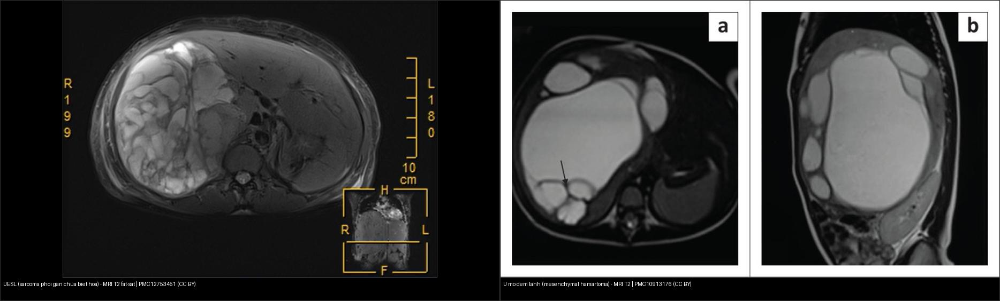
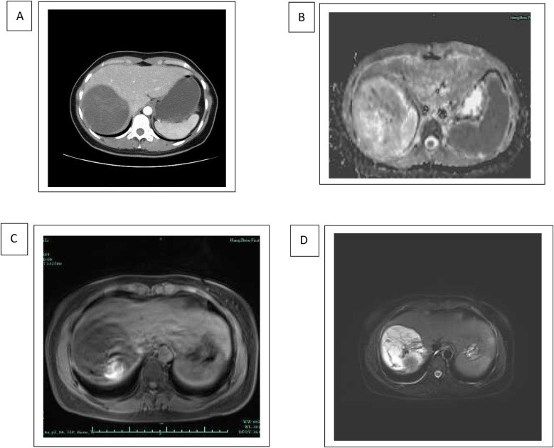
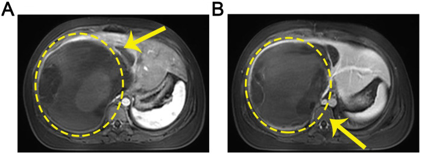
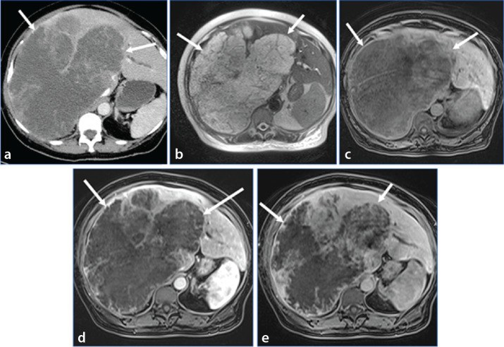

663 — Sarcoma phôi gan chưa biệt hóa (UESL) & u gan hiếm ở trẻ / Undifferentiated embryonal sarcoma of the liver
Tags: pattern:khoi-gan-gia-nang vung:gan score:PRETEXT protocol:US-CT-MRI-gan-nhi incidentaloma:khoi-gan-nhi
Mức chắc chắn (certainty): tổng hợp y văn (literature synthesis) — tổng hợp review + ca nguyên văn từ y văn mở (đa số CC BY); các ca minh họa ghi rõ PMCID + Fig trong images/CREDITS.md, không tự suy diễn thêm ngoài chú thích gốc.
1. Tổng quan bệnh học – cơ chế hình ảnh
- UESL (undifferentiated embryonal sarcoma of the liver) là u mô đệm (mesenchymal) ác tính nguyên phát của gan, gần như chỉ gặp ở trẻ em, đỉnh 6–10 tuổi, nam hơi ưu thế. Về tần suất, đây là u gan ác nguyên phát phổ biến thứ 3 ở trẻ sau u nguyên bào gan (hepatoblastoma) và ung thư gan (hepatocellular carcinoma — HCC) (Stanietzky N et al., Diagn Interv Radiol 2025, PMC11880871). Trong một kiểm toán đơn trung tâm 69 trẻ u gan không phải hepatoblastoma, UESL chiếm 26,3% ở nhóm 3–10 tuổi và 22,7% ở nhóm ≥ 10 tuổi (Mehta A et al., Indian J Gastroenterol 2026, PMC13272263).
- Mối liên hệ với u mô đệm lành (mesenchymal hamartoma — MH): MH và UESL chia sẻ tái sắp xếp nhiễm sắc thể nhánh dài NST 19 tại vùng 19q13.4 (gen dung hợp MHLB1, liên quan vùng C19MC/MALAT1), và MH hiếm khi có thể biến đổi (malignant transformation) thành UESL — nên hai thực thể được coi là hai đầu của một phổ (Martins-Filho SN et al., Hepat Oncol 2020, PMC7338921). MH chiếm ~8% các u gan ở trẻ và 80% xuất hiện trong 2 năm đầu đời.
- TẠI SAO UESL trông "giả nang" (pseudocystic) dù thực chất là u ĐẶC? Mô u gồm chất nền nhầy (myxoid stroma) giàu nước và các ổ hoại tử/xuất huyết. Vì nước cho T2 rất dài, khối ngậm nước này sáng gần như dịch não tủy trên T2W và giảm đậm độ trên CT, tạo cảm giác "một nang lớn có vách". Nhưng khác nang thật, u có vỏ xơ giả (fibrous pseudocapsule) — một viền dày giảm tín hiệu trên cả T1W và T2W — và ngấm thuốc dần (progressive delayed enhancement) ở vỏ và mô đặc bên trong ở thì muộn. Đây là điểm chốt loại nang lành (nang đơn thuần không ngấm); nếu chỉ đọc thì động mạch sẽ tưởng nang, bắt buộc phải có thì muộn 3–5 phút (Stanietzky 2025).
- Vì sao vẫn thấy điểm T1 tăng tín hiệu bên trong? Đó là ổ xuất huyết trong u (methemoglobin) — dấu hiệu gợi ý ác tính, giúp phân biệt một khối "giả nang" với nang dịch thuần.
- Vôi hóa: UESL thường KHÔNG vôi hóa — ngược với hepatoblastoma (vôi hóa thô 40–50%). Đây là mẹo phân biệt nhanh trên CT.
- Alpha-fetoprotein (AFP): UESL phần lớn AFP BÌNH THƯỜNG, trong khi hepatoblastoma tăng AFP ở ~95% ca. Vì vậy AFP bình thường KHÔNG loại trừ u ác — đây là cạm bẫy hay được gọi là "nang lành" làm trì hoãn chẩn đoán.
- Ngưỡng định lượng: UESL ưu thế thùy gan phải, kích thước lớn ~10–29 cm khi chẩn đoán (ca nguyên văn: 10,8 × 9,5 cm ở người lớn — Mo Y et al., Front Oncol 2025, PMC12753451; 13,7 × 13,6 × 11,5 cm ở trẻ — Jensen L et al., Cureus 2025, PMC12433609). Vị trí di căn hay gặp: phổi, màng phổi, phúc mạc.
- So sánh hai đầu phổ MH ↔ UESL: MH (lành) là khối nhiều nang thật có vách, không ngấm mô đặc; UESL (ác) giả nang nhưng đặc bên trong, ngấm vỏ dày + mô đặc dần ở thì muộn.

2. Mẫu hình + chẩn đoán phân biệt theo vị trí (gamut)
- Mẫu hình vào: khối gan lớn, giả nang (pseudocystic), thùy phải, ở trẻ 6–10 tuổi, AFP bình thường.
- Gamut theo tuổi (quan trọng nhất vì mô học phụ thuộc tuổi):
- < 2 tuổi: u mô đệm lành (MH), u mạch máu nhũ nhi (infantile hemangioma), u nội mô mạch máu (hemangioendothelioma), u mô đệm cơ thận cấp (congenital mesoblastic nephroma) di căn ít gặp.
- 6 tháng – 5 tuổi: u nguyên bào gan (hepatoblastoma — cần AFP/vôi hóa thô).
- 6 – 10 tuổi: UESL, hepatoblastoma muộn, HCC nền xơ gan.
- > 10 tuổi: HCC, UESL, di căn.
- Gamut theo hình thái "khối giả nang / nang có vách": UESL, MH, carcinoma giả sarcoma (sarcomatoid carcinoma), u nhầy đường mật (biliary mucinous cystic neoplasm — MCN/biliary cystadenoma), nang sán lá gan (hydatid), áp-xe gan (pyogenic abscess), di căn (neuroblastoma, Wilms), u quái (teratoma — có mỡ + vôi hóa).
- Gamut theo bối cảnh lâm sàng: trẻ đau bụng + sờ thấy khối + sụt cân (UESL/HCC); sốt + đau hạ sườn phải (áp-xe); bụng cấp (cấp cứu) do vỡ u (UESL có thể vỡ, gây bụng cấp).
- Gợi nhớ: khối gan "giả nang" ở trẻ 6–10 tuổi + AFP bình thường + vôi hóa âm = nghĩ UESL cho đến khi loại trừ; khối nhiều nang ở nhũ nhi + AFP bình thường = MH; khối đặc + AFP rất cao + vôi hóa thô = hepatoblastoma.
3. Bảng so sánh phân biệt (ma trận đối chiếu)
| Thực thể (entity) | Hình ảnh điển hình (US/CT/MRI) | Chốt vào (rule-in) | Chốt loại (rule-out) | Gợi ý xác nhận |
|---|---|---|---|---|
| UESL (sarcoma phôi gan) | Khối lớn thùy phải giả nang; CT giảm đậm độ; T2 rất sáng (myxoid); vỏ xơ giả dày giảm tín hiệu T1/T2; ngấm dần thì muộn | Trẻ 6–10 tuổi + khối giả nang ĐẶC (ngấm vỏ/mô đặc thì muộn) + AFP bình thường + không vôi hóa | Không ngấm ở mọi thì + vách mỏng đều → nghĩ nang lành | MRI đa thì + ADC; sinh thiết; giai đoạn sau mổ (IRS group) |
| U mô đệm lành (MH) | Khối nhiều nang thật có vách, T2 sáng, ít/không ngấm mô đặc | Nhũ nhi < 2 tuổi + nhiều nang có vách + AFP bình thường | Ngấm vỏ dày + mô đặc dần thì muộn → nghĩ UESL | MRI; theo dõi (MH có thể thoái triển) hoặc cắt nếu chèn ép |
| U nguyên bào gan (hepatoblastoma) | Khối đặc không đồng nhất, hoại tử, vôi hóa thô | 6 tháng–5 tuổi + AFP > 10.000 ng/mL + vôi hóa thô 40–50% | AFP bình thường + giả nang không vôi hóa → nghĩ UESL/MH | AFP, CT/MRI đa thì, PRETEXT |
| U nhầy đường mật (MCN/biliary cystadenoma) | Nang nhiều ngăn, vách ngấm thuốc, đôi khi có nốt đặc trong vách | Vách ngấm + nốt đặc trong vách + người lớn/trẻ lớn | Vách ngấm đều không nốt + trẻ 6–10 tuổi AFP bình thường → vẫn phải loại UESL | MRCP + MRI đa thì; mô bệnh sau cắt |
| Áp-xe gan | Khối giảm đậm độ, viền ngấm, có thể mức khí | Sốt + tăng bạch cầu + khí trong ổ + thành viền ngấm liên tục | Không sốt, viền ngấm dần muộn, khối lớn → nghĩ u | Siêu âm/CT; chọc hút chẩn đoán |
| Nang sán lá gan (hydatid) | Nang tách màng (hoa súng), vách/đậm độ ngăn — đậm độ KHÔNG phân biệt được với nang đơn thuần (9,2 vs 7,3 HU, AUC 54,6%) | Dịch tễ + dấu tách màng/vách + huyết thanh (ELISA) | Có mô đặc ngấm thì muộn → không phải nang sán | ELISA + MRI; cấm chọc mù |
Dấu hiệu chốt cần đọc đúng trên từng chuỗi xung
- Vỏ xơ giả dày (fibrous pseudocapsule): viền giảm tín hiệu trên cả T1W và T2W, ngấm thuốc muộn — đây là "Chốt vào" mạnh nhất phân biệt UESL với nang thật (nang thật có vách mỏng, không ngấm).
- Đậm độ/tín hiệu giống dịch (CSF-like) trên T2 nhưng có điểm T1 tăng tín hiệu (xuất huyết) → cảnh giác u đặc.
- Thì muộn bắt buộc: "ngấm dần (gradual/progressive enhancement)" là mấu chốt; nang đơn thuần không có.
- Trên DWI/ADC, mô u đặc hạn chế khuếch tán (ADC thấp) trong khi lòng giả nang (hoại tử/nhầy) ADC cao — tương phản giúp thấy u không phải dịch thuần.
4. Protocol chụp + hệ phân độ/điểm chuẩn hóa
- Protocol đánh giá khối gan ở trẻ (theo tuổi + AFP):
- Siêu âm bụng đầu tay (khối đặc/nang, tưới máu bằng Doppler màu);
- CT bụng đa thì hoặc MRI gan (T1/T2 fat-sat, DWI/ADC, động học sau tiêm thì động mạch, thì cửa, thì muộn 3–5 phút; cân nhắc chất tương phản đặc hiệu tế bào gan cho u lành);
- AFP huyết thanh trước điều trị (nhớ: AFP bình thường KHÔNG loại trừ UESL);
- CT ngực tìm di căn phổi (vị trí di căn hay gặp: phổi, màng phổi, phúc mạc);
- Sinh thiết khi cần mô học — thận trọng vì u giả nang dễ lấy nhầm vùng hoại tử, gây âm tính giả (ca Mo 2025: chọc/fenestration ban đầu đọc "nang gan lành" → tái phát mới ra UESL).
- Phân độ: UESL không dùng PRETEXT như hepatoblastoma. Giai đoạn dùng nhóm sau mổ của Intergroup Rhabdomyosarcoma Study (IRS group I–IV) theo mức cắt bỏ triệt để. (PRETEXT I–IV vẫn được nhắc trong một số báo cáo UESL nhưng là hệ của hepatoblastoma — cần ghi rõ khi trình bày.)
- Điều trị: hóa trị tân bổ trợ (neoadjuvant) (phác đồ kiểu sarcoma: ifosfamide, doxorubicin, vincristine, actinomycin-D, cyclophosphamide) → cắt gan triệt để (RO) → hóa trị bổ trợ; ghép gan khi không cắt được; xạ trị cho bệnh không mổ được/tái phát. Tiên lượng phụ thuộc cắt bỏ hoàn toàn (Lin WY et al., Cancers 2024, PMC10931367; Li J et al., Transl Pediatr 2024, PMC11148738).
- Kết cục định lượng (NCDB 2004–2015, n = 82 trẻ + 41 người lớn): trẻ sống sót toàn bộ 5 năm 84,4% vs người lớn 48,2% (p < 0,001); trẻ được hóa trị nhiều hơn (92,7% vs 65,9%) (Ziogas IA et al., Cancers 2021, PMC8230649).
- Quy trình ra quyết định (Mermaid):
flowchart TD
A[Khối gan ở trẻ] --> B{Tuổi + AFP}
B -->|6 tháng-5 tuổi, AFP > 10.000| C[Nghĩ hepatoblastoma: vôi hóa thô 40-50%, PRETEXT]
B -->|6-10 tuổi, AFP bình thường| D{Khối đặc hay giả nang?}
B -->|Duới 2 tuổi, AFP bình thường| E[Nghĩ u mô đệm lành / u mạch máu nhũ nhi]
D -->|Giả nang + ngấm vỏ/mô đặc thì muộn| F[Nghĩ UESL]
D -->|Nhiều nang, không ngấm mô đặc| E
F --> G[MRI đa thì + DWI/ADC + CT ngực]
G --> H[Hóa trị tân bổ trợ -> cắt gan RO -> hóa trị bổ trợ]
H --> I[Không cắt được: ghép gan / xạ trị]
5. Biến thể bình thường và cạm bẫy
- Cạm bẫy #1 (chết người) — "nang gan lành": đọc khối giả nang trên CT/US là nang đơn thuần rồi chọc hút/fenestration; mô bệnh vùng hoại tử cho "nang lành" → chẩn đoán trễ, u tái phát. Ca nguyên văn (Mo Y 2025, PMC12753451): nữ 50 tuổi, khối 10,8 × 9,5 cm được fenestration + dẫn lưu và đọc "nang gan lành"; tái phát mới xác định UESL, tử vong sau 9 tháng.
- Cạm bẫy #2 — AFP bình thường: nhiều người loại u ác khi AFP bình thường; UESL phần lớn AFP bình thường → không được dùng AFP bình thường để loại UESL.
- Cạm bẫy #3 — bỏ thì muộn: nếu chỉ chụp thì động mạch/cửa, khối giảm đậm độ giả nang trông giống nang. Bắt buộc thì muộn 3–5 phút để thấy ngấm dần của vỏ và mô đặc.
- Cạm bẫy #4 — nhầm với u mô đệm lành (MH): hai bệnh cảnh cùng nhìn "nang" trên T2; chốt bằng ngấm thuốc (UESL ngấm, MH không) + tuổi (MH < 2 tuổi). Về sinh bệnh học hai bệnh liên quan 19q13.4 — MH có thể biến đổi thành UESL.
- Cạm bẫy #5 — vỡ u: UESL lớn có thể vỡ gây bụng cấp; nếu gặp trẻ đau bụng cấp + khối gan lớn + dịch phúc mạc, nghĩ u vỡ (không chỉ chấn thương).
- Biến thể bình thường dễ nhầm: u máu gan nhũ nhi (infantile hemangioma) T2 sáng mạnh giống UESL, nhưng ngấm viền nốt rồi đầy dần vào trung tâm ở nhũ nhi + AFP bình thường; nang đơn thuần không ngấm; vùng gan đảo ngược pha (chemical shift) không phải khối.
6. Tự lượng giá — Blind Quiz ngay trên trang tĩnh
Ca 1 — Bé 6 tuổi, đau bụng + sờ thấy khối hạ sườn phải, AFP bình thường.

- Gợi ý lâm sàng: trẻ, khối gan lớn, AFP bình thường.
- Câu hỏi: (a) Trên T2W khối trông giống nang hay đặc? (b) Nêu 3 chẩn đoán phân biệt. (c) Dấu hiệu nào chốt loại nang lành?
Bấm để hiện đáp án (findings + chẩn đoán)
- Dấu hiệu (findings): (A) CT thì tĩnh mạch — khối giảm đậm độ lớn chiếm thùy gan; (B) DWI — tín hiệu cao; (C) T1W — tín hiệu hỗn hợp; (D) T2W — tín hiệu rất cao (giả dịch). Ảnh chụp từ ca UESL.
- Chẩn đoán (diagnosis): sarcoma phôi gan chưa biệt hóa (UESL) — vì khối "giả nang" thực chất là u đặc giàu chất nền nhầy (nước → T2 rất sáng) + có vỏ xơ giả ngấm thuốc muộn.
- Chốt loại nang lành: không ngấm ở mọi thì (nang thật) so với ngấm dần ở thì muộn (UESL) — bắt buộc có thì muộn 3–5 phút.
- Nguồn ảnh: Qiu X et al., Front Surg 2025, PMC12055822, Fig 1 — CC BY 4.0.
Ca 2 — Trẻ 11 tuổi, đau hạ sườn phải 20 ngày; MRI thì động mạch/tĩnh mạch.

- Câu hỏi: Khối ưu thế thùy nào? Có xâm lấn mạch gan lớn không? Chẩn đoán hàng đầu và hướng xử trí?
Bấm để hiện đáp án
- Dấu hiệu: (A) thì động mạch và (B) thì tĩnh mạch — khối lớn thùy phải (khoanh vàng) xâm lấn mạch gan lớn và cơ hoành; khối hỗn hợp nang-đặc.
- Chẩn đoán: UESL thùy phải, đã xâm lấn mạch lớn → cắt gan phải mở rộng theo đường trước (right trisectionectomy) + hóa trị bổ trợ.
- Nguồn ảnh: Liang Z et al., Front Surg 2026, PMC13002798, Fig 1 — CC BY 4.0. (Fig 4 của bài gốc = CT hậu phẫu cùng vị trí.)
Ca 3 — Khối "nang" lớn 10,8 cm ở gan, chọc hút ra "nang lành". Đọc kỹ CT + MRI thì muộn.

- Câu hỏi: Vì sao "nang lành" lại tái phát? Trên ảnh, dấu hiệu nào chứng minh khối là đặc chứ không phải nang?
Bấm để hiện đáp án
- Dấu hiệu: (a) CT cản quang — khối chủ yếu "nang" chiếm phần lớn thùy phải + một phần thùy trái; (b) T2W — tín hiệu cao trông như nang; (c–e) T1 sau gadolinium động học — tích tụ thuốc DẦN cho thấy bản chất ĐẶC của khối (vỏ dày + mô đặc ngấm dần).
- Chẩn đoán: UESL (mô bệnh xác nhận embryonal sarcoma, có thể biệt hóa sụn). Bài học: nang "không ngấm" là nang lành; khối giả nang ngấm dần là u — đừng chỉ đọc thì động mạch.
- Nguồn ảnh: Stanietzky N et al., Diagn Interv Radiol 2025, PMC11880871, Fig 3 — CC BY-NC 4.0.
Bài liên quan chéo
- 665 – Khối u gan ở trẻ: u nguyên bào gan vs ung thư gan vs u mạch máu (gamut đầy đủ theo tuổi + PRETEXT)
- 630 – U bụng nhi: neuroblastoma vs Wilms (di căn gan)
- 122 – U lành & áp-xe gan (áp-xe, u lành)
- 120 – Khối gan nền (động học ngấm thuốc)
- 123 – Nang gan & bệnh gan đa nang (gamut nang gan)
- 131 – Tắc mật: sỏi OMC vs Klatskin
Ảnh
- Tên file:
663_sarcoma-phoi-gan_Modality_SourceID.jpg. Nguồn + giấy phép từng ảnh trongimages/CREDITS.md. - Không tải được (paywall / cấm, vd AuntMinnie): chỉ dẫn link ở
sources.md.
Không dùng để chẩn đoán độc lập khi chưa có người hướng dẫn.